|
2009 Open Show - Judge Mr Ray Strudwick (Burpham) |
|
1. MINOR PUPPY DOG (1)
1st Mrs S & Mr D. Oliver - Bramstorm Walk The Line
|
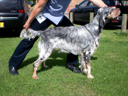 |
|
2. PUPPY DOG NO Entries |
|
|
3. SPECIAL VETERAN DOG 7 TO 9 YRS (2.1)
1st Miss F Tompsett - Radbrooks Break Away.
|
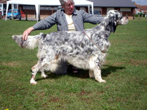 |
|
4. SPECIAL VETERAN DOG 10 & OVER .(2)
1st Mr & Mrs P Melish. - Ownways Moving Shadow for Monbrec
2nd. Mr & Mrs P. Dunks. - Sh. Ch. Samelen Shooting Star
|
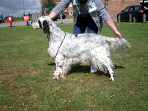 |
|
5. JUNIOR DOG (4.1)
1st Mrs C. Sayers - Mariglen Blue Flame for Christter (NAF)
2nd Mr K.E. & Mrs G.M.Lewis - Tatterset Doctor at
Large with Kegil
3rd. Mr. M.M. Slack - Ravensett Renaissance
|
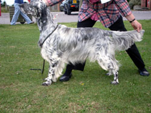 |
|
6. YEARLING DOG (4.2)
1st Mr & Mrs S.A. Wood - Swannery Magical Moment
2nd Mr & Mrs P. Mellish - Walshaw Christmas Spirit
at Monbrec.
|
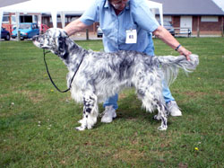 |
|
7. MAIDEN DOG No Entries |
|
|
8. NOVICE DOG (3)
1st. Mr & Mrs S.A. Wood - Swannery Magical Moment
2nd. Mr. M.M. Slack - Ravensett Renaissance
3rd. Mr & Mrs P. Mellish - Walshaw Christmas
Spirit at Monbrec.
|
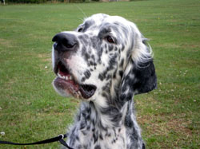 |
|
9. GRADUATE DOG (4.2)
1st Mr M & Mrs J. Tompson - Samelen Jupiter
2nd. Mrs M.R.Young - Decoverly Sundance to Brookedge
|
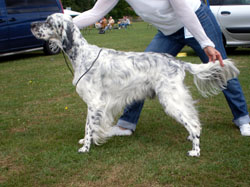 |
|
10 POST GRADUATE DOG (3.2)
1st Mrs M. Osman - Bournehouse Dream Maker Sh CM
2nd. Mrs M.R.Young - Decoverly Sundance to Brookedge
|
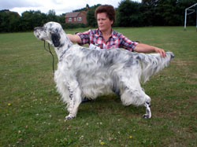 |
|
11 LIMIT DOG (5)
1st Mr E. Deville - Swanery Magical Legend
2nd Mrs A.Wright - Fishwick Dancing Lad
3rd. Mr. G & Mrs B.A. Jolly - Wansleydale
Loganberry at Jolymore
Res. Mr & Mrs P. Dunks - Samelen One Man
VHC. Mr M.M. Slack - Ravensett Dark Fire
|
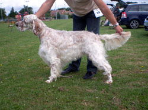 |
|
12 OPEN DOG (1)
1st. Mrs P.J. Malins - & Mrs S. Oliver - Taurkel
Gold Quest for Bramstorm
|
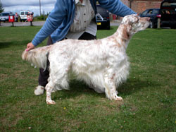 |
|
13. SPECIAL BEGINNERS DOG ((2.1)
1st Mr & Mrs P. Mellish - Walshaw Christmas Spirit
at Monbrec.
|
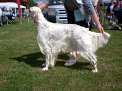 |
|
|
Best Dog - Mrs C. Sayers - Mariglen Blue Flame for
Christter (NAF)
Res Best Dog - Mr E. Deville - Swanery Magic Legend
Best Puppy Dog - Mrs S & Mr D. Oliver -
Bramstorm Walk The Line
Best Veteran Dog - Mr & Mrs P Melish. - Ownways
Moving Shadow for Monbrec
Michael Winch Special Yearlings Memorial Stakes Dog
Or Bitch Judge Mrs Elizabeth U'Ren (Bensophie) |
|
1st. Mr K.E. & Mrs G.M. Lewis - Kegil Golden Delicious:
2nd. Mr & Mrs P. Mellish - Walshaw Christmas
Spirit at Monbrec.
3rd. Mr K.E. & Mrs G.M.Lewis - Tatterset Doctor
at Large with Kegil:
Res. Mr. M.M. Slack - Ravensett Renaissance:
VHC. Mrs S & Mrs D. Oliver - Bramstorm Line Dancer |
 |
|
Lesley Allan-Scott Special Open Memorial Class Dog
or Bitch Judge Mrs Elizabeth U'Ren (Bensophie) |
|
1st. Mrs P.J. Malins - & Mrs S. Oliver -
Taurkel Gold Quest for Bramstorm:
2nd. Mr. G & Mrs B.A. Jolly - Wansleydale
Loganberry at Jolymore:
3rd. Mr B.V. & Mrs A. Attwood - Swannery
Finlandia JW:
RES. Mrs A. James - Ingella Pinch of Nutmeg:
VHC. Miss F. Tompsett - Radbrooks Wild Honey |
|
|